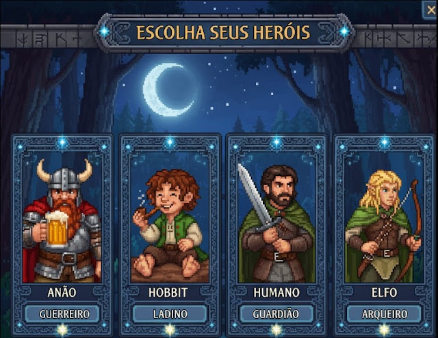

Povos de Beleriand
Raças e reinos
Escolha entre anões, hobbits, humanos e elfos. Comece como jogador livre e conquiste sua cidadania dentro de uma comunidade.
De livre a cidadão
- Encontre um representante do reino desejado.
- Converse sobre regras, tradições e necessidades da comunidade.
- Receba o reconhecimento oficial da liderança.

Territórios
Reinos disponíveis
Use os filtros para localizar reinos por raça ou situação de recrutamento.